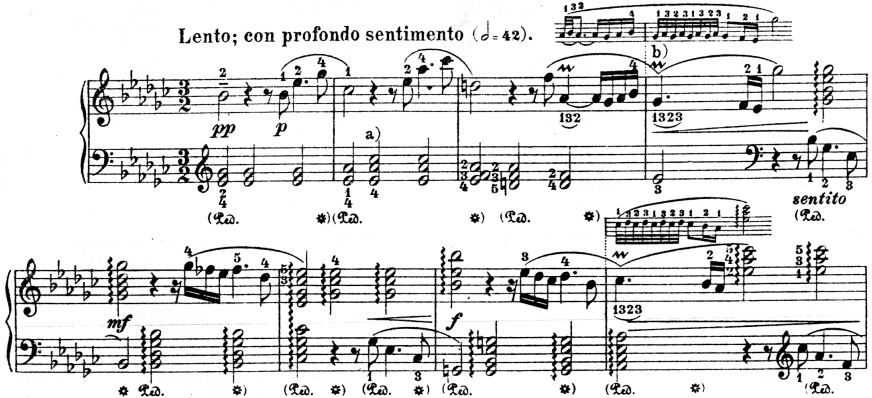
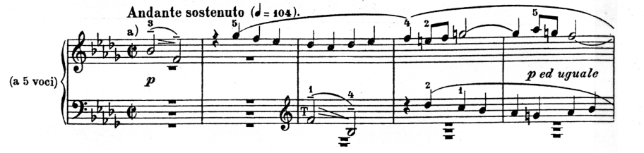

Клавирное творчество Баха. «Хорошо темперированный клавир»
Монументальный баховский цикл прелюдий и фуг, известный под названием «Хорошо темперированный клавир», справедливо считается одним из высших достижений музыкального искусства. Создавая его, Бах ставил перед собой вполне определенную цель – ознакомить играющих на клавире со всеми 24 мажорными и минорными тональностями (многие тональности с большим количеством ключевых знаков в то время не были в употреблении). Он хотел показать несомненное преимущество новой темперированной настройки клавишных инструментов перед общепринятым в старину натуральным строем. Идею темперации до Баха творчески поддержали и другие музыканты, например, Пахельбель, Маттесон, но баховское решение этой художественной задачи стало уникальным по мастерству и вдохновению.
Появление I-го тома «ХТК» относится к 1722 году, II-го – к 1744; оба тома содержат произведения разных лет.
В обеих частях «ХТК» прелюдии и фуги расположены попарно «малыми циклами» (прелюдия и фуга в одной тональности) в восходящей последовательности по хроматической гамме.[1]
В «ХТК» Бах подчеркнул характерную семантику[2] различных тональностей. Так, например, D-dur олицетворяет энергию и триумфальность, c-moll – суровый драматизм и патетику; баховский h-moll связан с напряженным, страстным и скорбным настроением; es-moll и b-moll – с образами смирения и грусти; E-dur и Fis-dur ассоциируются с нежными пасторальными образами. B-dur – тональность «ангелов и младенцев», очень нежная и чистая.
Как и в органном творчестве Баха, в «ХТК» представлен устойчивый тип полифонического цикла, в котором обе части взаимно оттеняют друг друга. Свободному развёртыванию в прелюдии противостоит строго упорядоченный принцип развития в фуге.
Прелюдии
В эпоху Баха понятие прелюдийности было связано с «предварительной игрой», то есть исполнением импровизационного вступления к чему-то более значительному. Поэтому жанру прелюдии в целом не свойственна строго определённая форма; господствует свободное развёртывание материала, фигурационная разработка одного тематического «ядра» (отсюда – характерное для многих прелюдий сохранение единого типа фактуры, что сближает её с жанром этюда[3]). Нередко находят применение и полифонические приемы.
И прелюдии, и фуги «ХТК» исключительно многообразны как в образном, так и в композиционном плане. Среди прелюдий встречаются токкаты органного типа (с-moll, Es-dur), скрипичные импровизации (D-dur), народно-жанровые танцы (Аs-dur), «арии» (es-moll, cis-moll, f-moll, g-moll), пасторали (E-dur), пьесы типа трио для двух солирующих голосов и basso continuo (h-moll). Многие прелюдии напоминают инвенции – 2х-голосные (Cis-dur, F-dur, a-moll, fis-moll) и 3х-голосные (E-dur, gis-moll, A-dur, H-dur).
По форме прелюдии объединяются в 2 группы:
- свободно развивающиеся при «текучей» фактуре (например, прелюдии C-dur, c-moll, D-dur). Для них характерна импровизационность, особенно в заключительных разделах (свободные пассажи, смены темпа, речитативы – они создают перелом в плавном мелодическом развертывании).
- подчиненные принципу старинной двухчастности (например, прелюдии es-moll, g-moll).
Фуги
Фуги также свидетельствуют о неисчерпаемой творческой фантазии Баха. Каждая из них имеет свое собственное «лицо», которое определяется темой, ее характером, способом ее развития, количеством голосов и их взаимодействием.
Есть фуги, насыщенные стреттными проведениями темы (C-dur, cis-moll, d-moll, es-moll, g-moll, b-moll); в других фугах стретты вообще отсутствуют (c-moll, D-dur, B-dur, h-moll).
В некоторых фугах очень важную роль играют интермедии (например, c-moll, D-dur), в других интермедий нет совсем. Классический пример безинтермедийной фуги – C-dur.
Степень полифонической сложности в баховских фугах независима от количества голосов. Например, фуга b-moll 5-голосна, но при этом не отличается особой сложностью. В 3х-голосной фуге es-moll, напротив, множество сложных полифонических приемов.
Раскрытию содержания прелюдий и фуг «ХТК» помогает цитирование в них мелодий протестантских хоралов, многочисленные ассоциации с хоровыми сочинениями композитора, а также использование музыкальной символики. Благодаря этому современники Баха могли воспринимать его музыку как понятную речь. Многие авторитетные музыканты (Швейцер, Яворский, Юдина) обращали внимание на скрытую программность «ХТК» и связывали его содержание с библейской тематикой, с Ветхим и Новым Заветом.
Например, темы фуг b-moll и es-moll основаны на мелодии одного и того же хорала – «Из бездны бед взываю я к тебе», что указывает на общность их содержания.
Прелюдия и фуга es-moll («Снятие с креста») – это один из самых лирических и песенных циклов во всем «ХТК». Прелюдия опирается на ритм сарабанды. В ней 2 противоположных по смыслу звуковых плана: восклицания скорби, душевной боли и тихий перезвон колоколов в равномерном чередовании аккордов.
Фуга звучит как задумчивая и печальная хоровая песня. В ее музыке есть сходство с русскими протяжными мелодиями (опора на ч.5, свобода метроритма, отсутствие вводного тона в миноре). Тема подвергается всевозможным полифоническим преобразованиям. Здесь и обращения, и ритмические изменения, и стретты. Так, заключительная часть этой фуги содержит замечательный образец трехголосной стретты (в верхнем голосе – тема в увеличении, в двух других – в обращении и прямом движении). Значительное место занимает также разработка темы в обращении.
Скорбным настроением отмечены и циклы cis-moll («Моление о чаше»), b-moll (смерть Иисуса и отчаяние стоящих перед крестом людей), h-moll («Шествие на Голгофу»: в теме фуги, насыщенной тональными отклонениями, трижды проводится символ креста, напоминая о страданиях Иисуса).
В экспозиции фуги b-moll глубину страданий подчеркивает нисходящий порядок вступления голосов, символизирующий погружение в «мир скорбей». 
В горестной, сосредоточенной музыке прелюдии cis-mоll «знаками печали» служат нисходящие звукоряды – catabasis (поэтому Ф. Бузони говорил, что это «нечто в духе «Страстей»). В фуге cis-mоll (это единственная тройная фуга в «ХТК») также присутствует скорбная музыкальная символика: в 1-й теме ясно читается фигура креста. 2-я тема (т.36) – «чаши страдания», основанная на фигуре circulation (вращение). 3-я тема (т.49, мелодия тенора) – символ предопределения (восходящая кварта).
Во всех малых циклах «ХТК» присутствует более или менее яркий контраст между прелюдией и фугой. Например, в цикле C-dur (ассоциативный образ «Благовещение») хрупкой и возвышенной прелюдии (ее арпеджированная «лютнеобразная» фактура вызывает представление о поющих ангелах) противопоставлена сдержанная и уверенная музыка фуги. Она отличается плотностью звучания и редкой полифонической насыщенностью. В основу ее темы, сочетающей поступенное диатоническое движение с активными квартовыми оборотами, положена начальная строфа хорала «Что Господь делает, то во благо».[4]
Фуга строится исключительно на проведениях темы, образующих многочисленные стретты. 1-я стретта появляется уже в пределах экспозиции (7-8 такты). Трехголосная и четырехголосная стретты содержатся в средней части фуги. Тема здесь интонационно меняется: появляются измененные ступени, ум.4 вместо ч.4. Из трех репризных проведений темы 2 также даны в виде стретты. Завершает фугу фигура anabasis – восходящий звукоряд из пяти звуков (символ воскресения).
В цикле D-dur музыка прелюдии отличается легкостью, изяществом, ритмической упругостью, а пышная и величавая музыка фуги выдержана в «театральном» стиле французской увертюры (в теме выделяется размашистый восходящий скачок на сексту и пунктирный ритм, получающие развитие в широких интермедиях). Пышная, величавая музыка фуги выдержана в «театральном» стиле французской увертюры (пунктирный ритм, размашистый восходящий скачок на сексту).
[1] Шопен (ор.28) и Скрябин (ор.11) свои прелюдии расположили по принципу тонального родства. Бах же, очевидно, был заинтересован в более наглядном расположении тональностей темперированной системы.
[2] Семантика – смысловое значение.
[3] Подобного рода пьесы носили и другие названия, например преамбула, интрада, ричеркар, фантазия, каприччо, токката и т.п.
[4] восходящие кварты издавна использовались для выражения бодрости, душевной стойкости. В старинных хоралах и кантатах на мотивы с интервалом кварты часто приходятся ключевые слова, говорящие о вере в Господа.